Chapter 2 · Part 2 — Leaving Again
Then the wind began to moan. The leaves began to tremble.
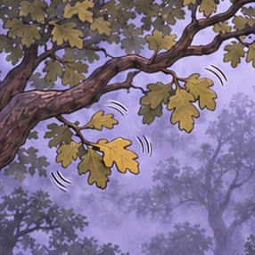
It was happening again.
“We’re leaving!” cried Annie. “Get down!”
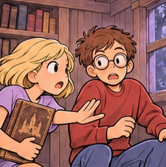
The wind moaned louder. The leaves shook harder.
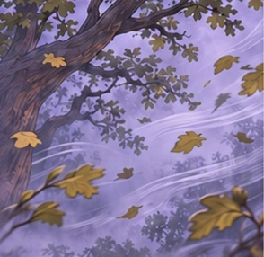
And the tree house started to spin. It spun faster and faster!
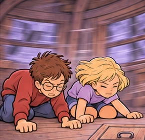
Jack squeezed his eyes shut.
Then everything was still.
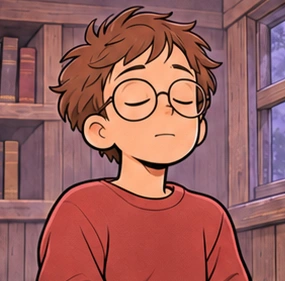
Absolutely still.
Jack opened his eyes. He shivered. The air was damp and cool.
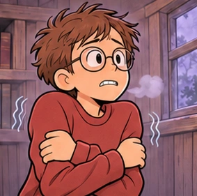
The sound of a horse’s whinny came again from below.
“Neeee-hhhh!”
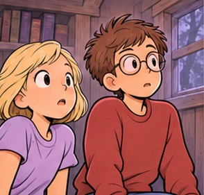
“I think we’re here,” whispered Annie. She was still holding the castle book.
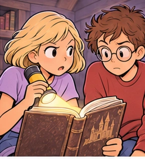
Jack peeked out the window.
A huge castle loomed out of the fog.
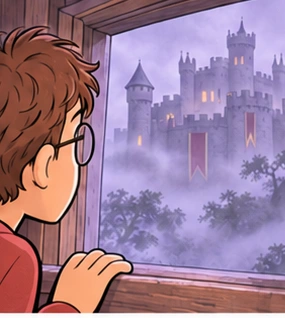
He looked around. The tree house was in a different oak tree. And down below, the knight on the black horse was riding by.
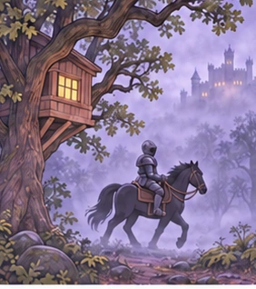
“We can’t stay here,” said Jack. “We have to go home and make a plan first.” He picked up the book about Pennsylvania. He opened it to the page with the red silk bookmark. He pointed to the photograph of the Frog Creek woods. “I wish—”
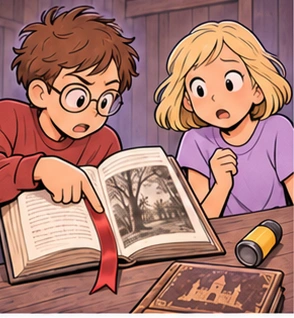
“No!” said Annie. She yanked the book away from him. “Let’s stay! I want to visit the castle!”
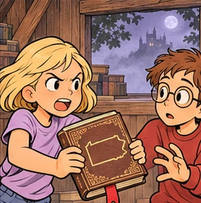
“You’re nuts. We have to examine the situation,” said Jack. “From home.”
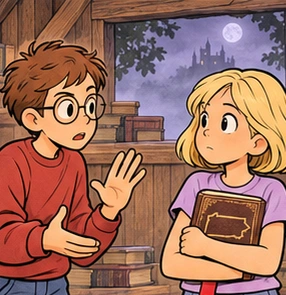
“Let’s examine it here!” said Annie.
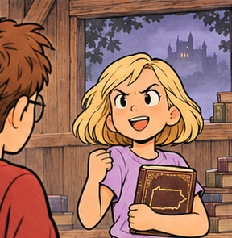
“Come on.” He held out his hand. “Give it.”
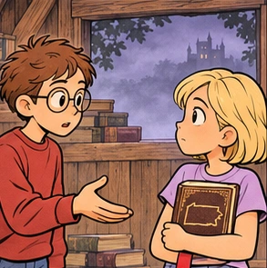
Annie gave Jack the book. “Okay. You can go home. I’m staying,” she said. She clipped the flashlight to her belt.
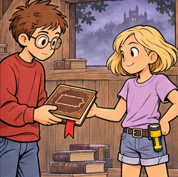
“Wait!” said Jack.
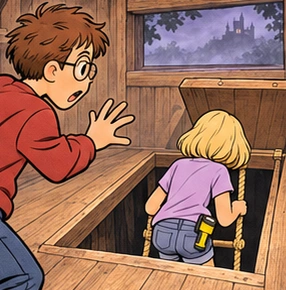
“I’m going to take a peek. A teeny peek,” she said. And she scooted down the ladder.
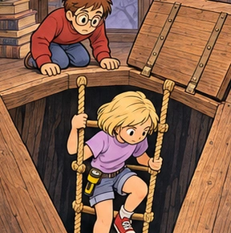
Jack groaned. Okay, she had won. He couldn’t leave without her. Besides, he sort of wanted to take a peek himself.
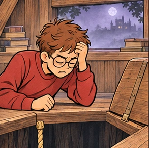
He put down the book about Pennsylvania.
He dropped the castle book into his pack. He stepped onto the ladder. And headed down into the cool, misty air.
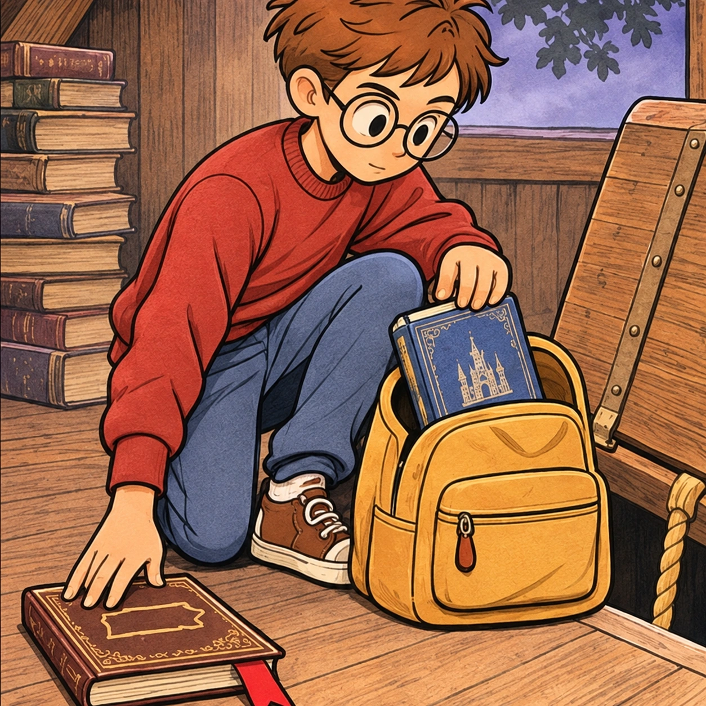